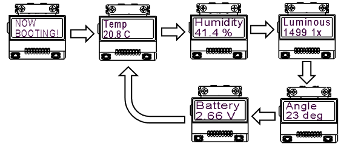
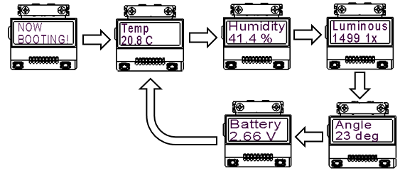

LCD
概要
電源リーフには、電池電圧をモニタするためのADコンバータを実装。温度、湿度、照度、傾きだけでなく、電池電圧も測定し、LCDに表示させます。 温度（または、湿度）の補正の仕方 表示させたい温度（または、湿度）と４-Sensorsの温度（または、湿度）に、ずれがあるときは、２点間補正を行います。詳しくは、こちら。
 

使用するリーフ
| Type | Name | Q’ty |
|---|---|---|
| AI04 | LCD | 1 |
| AI01 | 4-Sensors | 1 |
| AP01 | AVR MCU | 1 |
| AZ01 | USB | 1 |
| AX03 | Leaf×2 | 1 |
| AV01 | CR2032 | 1 |
| AZ62 | Connector Cover | 2 |
| AZ63 | Nut Plate | 1 |
| CR2032 coin cell battery | 1 | |
| M2*15mm screw | 4 |
リーフの組立

ソースコード
- 書き込みには、4-Sensors、LCD、AVR MCUライブラリ（タイマ割り込み）が必要です。予め、ライブラリをインクルードしておいてください。詳しくは、[こちら]。
- Arduino IDEで、以下のスケッチをマイコンボードに書き込んでください。
//=====================================================================
// Leafony Platform sample sketch
// Platform : 4-Sensors
// Processor : ATmega328P (3.3V /8MHz)
// Application : 4-Sensors with LCD
//
// Leaf configuration
// (1) AI01 4-Sensors
// (2) AI04 LCD
// (3) AP01 AVR MCU
// (4) AV02 CR2450 or AV01 CR2032
// (5) AZ01 USB (for debug)
//
// (c) 2019 Trillion-Node Study Group
// Released under the MIT license
// https://opensource.org/licenses/MIT
//
// Rev.00 2019/08/20 First release
//=====================================================================
//use libraries
//Adafruit LIS3DH
//https://github.com/adafruit/Adafruit_LIS3DH
//※ Adafruit_LIS3DH.h
// uint8_t readRegister8(uint8_t reg);
// void writeRegister8(uint8_t reg, uint8_t value);
// をpublic:に移動する
//Adafruit Unified Sensor Driver
//https://github.com/adafruit/Adafruit_Sensor
//SmartEverything ST HTS221 Humidity Sensor
//https://github.com/ameltech/sme-hts221-library
//ClosedCube Arduino Library for ClosedCube OPT3001
//https://github.com/closedcube/ClosedCube_OPT3001_Arduino
//ST7032 - Arduino LiquidCrystal compatible library
//https://github.com/tomozh/arduino_ST7032
//=====================================================================
//=====================================================================
// difinition
//=====================================================================
#include <MsTimer2.h>
#include <avr/wdt.h>
#include <avr/sleep.h>
#include <avr/power.h>
#include <Wire.h>
#include <Adafruit_LIS3DH.h>
#include <Adafruit_Sensor.h>
#include <HTS221.h>
#include <ClosedCube_OPT3001.h>
#include <SoftwareSerial.h>
#include <ST7032.h>
//=====================================================================
//=====================================================================
// シリアルコンソールへのデバック出力
// #define DEBUG = 出力あり
// //#define DEBUG = 出力なし（コメントアウトする）
//=====================================================================
#define DEBUG
//=====================================================================
//=====================================================================
// IOピンの名前定義
// 接続するリーフに合わせて定義する
//=====================================================================
// --------------------------------------------
// PD port
// digital 0: PD0 = PCRX (HW UART)
// digital 1: PD1 = PCTX (HW UART)
// digital 2: PD2 = INT0#
// digital 3: PD3 = INT1#
// digital 4: PD4 = Reserved /* not use */
// digital 5: PD5 = Reserved /* not use */
// digital 6: PD6 = Reserved /* not use */
// digital 7: PD7 = Reserved /* not use */
// --------------------------------------------
#define PCTX 0
#define PCRX 1
#define INT0 2
#define INT1 3
#define RSV_D4 4
#define RSV_D5 5
#define RSV_D6 6
#define RSV_D7 7
// --------------------------------------------
// PB port
// digital 8: PB0 = Reserved /* not use */
// digital 9: PB1 = Reserved /* not use */
// digital 10:PB2 = SS#
// digital 11:PB3 = MOSI
// digital 12:PB4 = MISO
// digital 13:PB5 = SCK (LED)
// PB6 = XTAL1
// PB7 = XTAL2
//---------------------------------------------
#define RSV_D8 8
#define RSV_D9 9
#define SS 10
#define MOSI 11
#define MISO 12
#define LED_PIN 13
// --------------------------------------------
// PC port
// digital 14/ Analog0: PC0 = Reserved /* not use */
// digital 15/ Analog1: PC1 = Reserved /* not use */
// digital 16/ Analog2: PC2 = Reserved /* not use */
// digital 17/ Analog3: PC3 = Reserved /* not use */
// digital 18/ SDA : PC4 = SDA (I2C)
// digital 19/ SCL : PC5 = SCL (I2C)
// RESET : PC6 = RESET#
//-----------------------------------------------
#define RSV_D14 14
#define RSV_D15 15
#define RSV_D16 16
#define RSV_D17 17
#define SDA 18
#define SCL 19
//=====================================================================
// プログラム内で使用する定数定義
//
//=====================================================================
//-----------------------------------------------
//３軸センサ、輝度センサ I2Cアドレス
//-----------------------------------------------
#define LIS2DH_ADDRESS 0x19 // SD0/SA0 pin = VCC
#define OPT3001_ADDRESS 0x45 // ADDR pin = VCC
#define I2C_EXPANDER_ADDR_LCD 0x1A
//-----------------------------------------------
// loop() interval
// MsTimer2のタイマー割り込み発生間隔(ms)
//-----------------------------------------------
#define LOOP_INTERVAL 125 // 125ms interval
//-----------------------------------------------
// LIS2DH
//-----------------------------------------------
#define DIVIDER_2G 16383 // full scale 2G (=0xFFFF/4)
#define DIVIDER_4G 8191 // full scale 4G (=0xFFFF/4/2)
#define DIVIDER_8G 4096 // full scale 8G (=0xFFFF/4/4)
#define DIVIDER_16G 1365 // full scale 16G (=0xFFFF/4/12)
//-----------------------------------------------
// Batt ADC ADC081C027
//-----------------------------------------------
#define BATT_ADC_ADDR 0x50
//=====================================================================
// object
//=====================================================================
//-----------------------------------------------
// Sensor
//-----------------------------------------------
Adafruit_LIS3DH accel = Adafruit_LIS3DH();
ClosedCube_OPT3001 light;
//-----------------------------------------------
// LCD
//-----------------------------------------------
ST7032 lcd;
//=====================================================================
// プログラムで使用する変数定義
//
//=====================================================================
//=====================================================================
// RAM data
//=====================================================================
//---------------------------
// loop counter
//---------------------------
uint8_t iLoop1s = 0;
//---------------------------
// event
//---------------------------
bool eventSensorRead = false;
bool eventWriteLCD = false;
//---------------------------
// int0 interrupt
//---------------------------
volatile bool bEventSleep = false;
//---------------------------
// interval Timer2 interrupt
//---------------------------
volatile bool bInterval = false;
//---------------------------
// LIS2DH : accelerometer
//---------------------------
int16_t dataX, dataY, dataZ;
float dataX_g, dataY_g, dataZ_g;
float dataTilt, avrTilt;
//---------------------------
// HTS221 : Temperature/Humidity
//---------------------------
float dataTemp, avrTemp;
float dataHumid, avrHumid;
float calcTemp = 0;
float calcHumid = 0;
//---------------------------
// 2点補正用データ
//---------------------------
// 温度補正用データ0
float TL0 = 25.0; // 4-Sensors温度測定値
float TM0 = 25.0; // 温度計等測定値
// 温度補正用データ1
float TL1 = 40.0; // 4-Sensors温度測定値
float TM1 = 40.0; // 温度計等測定値
// 湿度補正用データ0
float HL0 = 60.0; // 4-Sensors湿度測定値
float HM0 = 60.0; // 湿度計等測定値
// 湿度補正用データ1
float HL1 = 80.0; // 4-Sensors湿度測定値
float HM1 = 80.0; // 湿度計等測定値
//---------------------------
// OPT3001 : Light
//---------------------------
float dataLight, avrLight;
float calcLight = 0;
//---------------------------
// LCD
//---------------------------
volatile bool bLCDchange = false;
volatile int lcd_view_sts = 0;
//---------------------------
// Sleep, Watchdog Timer
//---------------------------
volatile int countWDT = 0;
volatile int wakeupWDT = 2;
//---------------------------
// Batt
//---------------------------
float dataBatt = 0;
//=====================================================================
// setup
//=====================================================================
//-----------------------------------------------
// port
//-----------------------------------------------
//=====================================================================
// IOピンの入出力設定
// 接続するリーフに合わせて設定する
//=====================================================================
void setupPort(){
//---------------------
// PD port
//---------------------
// PD0 : digital 0 = RX
// PD1 : digital 1 = TX
pinMode(INT0, INPUT); // PD2 : digital 2 = BLE interrupt
pinMode(INT1, INPUT); // PD3 : digital 3 = sensor interrupt
//---------------------
// PB port
//---------------------
pinMode(LED_PIN, OUTPUT); // PB5 : digital 13 = DEV _LED
digitalWrite(LED_PIN, LOW);
//---------------------
// PC port
//---------------------
// PC4 : digital 18 = I2C SDA
// PC5 : digital 19 = I2C SCL
}
//=====================================================================
// 割り込み処理初期設定
//
//=====================================================================
//-----------------------------------------------
// external interrupt
// 外部割り込み設定
//-----------------------------------------------
void setupExtInt(){
attachInterrupt(0, intExtInt0, FALLING); // Sw1 INT0# = enabled
detachInterrupt(1); // sensor INT1# = disabled
}
//-----------------------------------------------
// timer2 interrupt (interval=125ms, int=overflow)
// メインループのタイマー割り込み設定
//-----------------------------------------------
void setupTC2Int(){
MsTimer2::set(LOOP_INTERVAL, intTimer2);
}
//=====================================================================
// I2C 制御関数
//
//=====================================================================
//-----------------------------------------------
//I2C スレーブデバイスに1バイト書き込む
//-----------------------------------------------
void i2c_write_byte(int device_address, int reg_address, int write_data){
Wire.beginTransmission(device_address);
Wire.write(reg_address);
Wire.write(write_data);
Wire.endTransmission();
}
//-----------------------------------------------
//I2C スレーブデバイスから1バイト読み込む
//-----------------------------------------------
unsigned char i2c_read_byte(int device_address, int reg_address){
int read_data = 0;
Wire.beginTransmission(device_address);
Wire.write(reg_address);
Wire.endTransmission(false);
Wire.requestFrom(device_address, 1);
read_data = Wire.read();
return read_data;
}
//=====================================================================
// 各デバイスの初期設定
//
//=====================================================================
//-----------------------------------------------
// sensor
//-----------------------------------------------
void setupSensor(){
//-------------------------------------
// LIS2DH (accelerometer)
//-------------------------------------
//-------------------
// I2C address
//------------------
accel.begin(LIS2DH_ADDRESS);
//-------------------
// register
//-------------------
accel.writeRegister8(LIS3DH_REG_CTRL1, 0x07); //X,Y,Z axis = enable
accel.setDataRate(LIS3DH_DATARATE_1_HZ); //Data rate = 1Hz
accel.writeRegister8(LIS3DH_REG_CTRL2, 0x00);
accel.writeRegister8(LIS3DH_REG_CTRL3, 0x00); // INT Disable
accel.writeRegister8(LIS3DH_REG_CTRL4, 0x80); //BUD = enable, Scale = +/-2g
//-------------------------------------
// HTS221 (temperature /humidity)
//-------------------------------------
smeHumidity.begin();
//-------------------------------------
// OPT3001 (light)
//-------------------------------------
OPT3001_Config newConfig;
OPT3001_ErrorCode errorConfig;
//-------------------
// I2C address
//-------------------
light.begin(OPT3001_ADDRESS);
//-------------------
// config register
//-------------------
newConfig.RangeNumber = B1100; // automatic full scale
newConfig.ConvertionTime = B1; // convertion time = 800ms
newConfig.ModeOfConversionOperation = B11; // continous conversion
newConfig.Latch = B0; // hysteresis-style
errorConfig = light.writeConfig(newConfig);
if(errorConfig != NO_ERROR){
errorConfig = light.writeConfig(newConfig); //retry
}
}
//=====================================================================
// 割り込み処理
//
//=====================================================================
//=====================================================================
// interrupt
//=====================================================================
//----------------------------------------------
// Timer2 INT
// タイマー割り込み関数
//----------------------------------------------
void intTimer2(){
bInterval = 1;
}
//---------------------------------------------
// Watchdog Timer INT
// WDT割り込み関数
//---------------------------------------------
ISR(WDT_vect){
wdt_disable();
countWDT += 1;
if (countWDT >= wakeupWDT){
countWDT = 0;
}
}
//----------------------------------------------
// INT0
// INT0割り込み関数
//----------------------------------------------
void intExtInt0(){
if (bEventSleep == false)
{
bEventSleep = true;
}
else
{
bEventSleep = false;
}
}
//----------------------------------------------
// INT1
// INT1割り込み関数
//----------------------------------------------
void intExtInt1(){
//bWakeupINT1 = true;
}
//====================================================================
// functions
//====================================================================
//--------------------------------------------------------------------
// counter /event
//--------------------------------------------------------------------
//-----------------------------------------
// main loop
// メインループのループ回数をカウントし
// 1秒間隔でセンサーデータの取得をONにする
// 4秒間隔でスリープ確認をONにする
//-----------------------------------------
void loopCounter(){
iLoop1s += 1;
//--------------------
// 1s period
//--------------------
if (iLoop1s >= 8){ // 125ms x 8 = 1s
iLoop1s = 0;
eventSensorRead = true;
eventWriteLCD = true;
}
}
//--------------------------------------------------------------------
// sensor
//--------------------------------------------------------------------
//-----------------------------------------
// main loop
// センサーデータ取得がONのとき、各センサーからデータを取得
// コンソール出力がONのときシリアルに測定値と計算結果を出力する
//-----------------------------------------
void loopSensor(){
double temp_mv;
//---------------------------
// 1s period
//---------------------------
if (eventSensorRead == true){
//-------------------------
// initialize parameter
//-------------------------
eventSensorRead = false;
//-------------------------
// LIS2DH
// 3軸センサーのデータ取得
//-------------------------
accel.read();
dataX_g = accel.x_g; //X軸
dataY_g = accel.y_g; //Y軸
dataZ_g = accel.z_g; //Z軸
if(dataZ_g >= 1.0){
dataZ_g = 1.00;
} else if (dataZ_g <= -1.0){
dataZ_g = -1.00;
}
dataTilt = acos(dataZ_g)/PI*180;
//-------------------------
// HTS221
// 温湿度センサーデータ取得
//-------------------------
dataTemp = (float)smeHumidity.readTemperature(); //温度
dataHumid = (float)smeHumidity.readHumidity(); //湿度
//-------------------------
// 温度と湿度の2点補正
//-------------------------
dataTemp=TM0+(TM1-TM0)*(dataTemp-TL0)/(TL1-TL0); // 温度補正
dataHumid=HM0+(HM1-HM0)*(dataHumid-HL0)/(HL1-HL0); // 湿度補正
//-------------------------
// OPT3001
// 照度センサーデータ取得
//-------------------------
OPT3001 result = light.readResult();
if(result.error == NO_ERROR){
dataLight = result.lux;
}
//-------------------------
// ADC081C027（ADC)
// 電池リーフ電池電圧取得
//-------------------------
uint8_t adcVal1 = 0;
uint8_t adcVal2 = 0;
Wire.beginTransmission(BATT_ADC_ADDR);
Wire.write(0x00);
Wire.endTransmission(false);
Wire.requestFrom(BATT_ADC_ADDR,2);
adcVal1 = Wire.read();
adcVal2 = Wire.read();
if (adcVal1 == 0xff && adcVal2 == 0xff) {
//測定値がFFならバッテリリーフはつながっていない
adcVal1 = adcVal2 = 0;
}
//電圧計算 ADC * （(リファレンス電圧(3.3V)/ ADCの分解能(256)) * 分圧比（２倍））
//dataBatt = (((adcVal1 << 4) | (adcVal2 >> 4)) * (3.3 / 256)) * 2 ;
temp_mv = ((double)((adcVal1 << 4) | (adcVal2 >> 4)) * 3300 * 2) / 256;
dataBatt = (float)(temp_mv / 1000);
//-------------------------
// シリアルモニタ表示
//-------------------------
#ifdef DEBUG
Serial.println("");
#if 0
Serial.println("--- sensor data ---");
Serial.println(" Tmp[degC] = " + String(dataTemp));
Serial.println(" Hum[%] = " + String(dataHumid));
Serial.println(" Lum[lx] = " + String(dataLight));
Serial.println(" Ang[arc deg] = " + String(dataTilt));
Serial.println(" Bat[V] = " + String(dataBatt));
//Serial.println("");
//Serial.println(" Accel X,Y,Z" + String(dataX_g) + " " + String(dataY_g) + " " + String(dataZ_g));
#else
Serial.println("T =" + String(dataTemp) + " H =" + String(dataHumid) + " L=" + String(dataLight) + " A=" + String(dataTilt) + " V=" + String(dataBatt));
#endif
#endif
//bWakeupINT1 = false;
}
}
//debug ///
void getBattVal()
{
uint8_t adcVal1 = 0;
uint8_t adcVal2 = 0;
Wire.beginTransmission(BATT_ADC_ADDR);
Wire.write(0x00);
Wire.endTransmission(false);
Wire.requestFrom(BATT_ADC_ADDR,2);
adcVal1 = Wire.read();
adcVal2 = Wire.read();
if (adcVal1 == 0xff && adcVal2 == 0xff) {
//測定値がFFならバッテリリーフはつながっていない
adcVal1 = adcVal2 = 0;
}
//電圧計算 ADC * （(リファレンス電圧(3.3V)/ ADCの分解能(256)) * 分圧比（２倍））
//dataBatt = (((adcVal1 << 4) | (adcVal2 >> 4)) * (3.3 / 256)) * 2 ;
double temp_mv = ((double)((adcVal1 << 4) | (adcVal2 >> 4)) * 3300 * 2) / 256;
float batval = (float)(temp_mv / 1000);
Serial.println(" V=" + String(batval));
}
void loopLCD( void ){
/* */
if( eventWriteLCD == true ){
eventWriteLCD = false;
veiwSencerData();
}
}
//---------------------------------------
// Veiw sensor data
// センサーデータを文字列に変換してLCDに表示する
//---------------------------------------
void veiwSencerData(){
float value;
char temp[7], humid[7], light[7], tilt[7],battVolt[7];
char code[4];
char sendData[40];
//-----------------------------------
//センサーデータを文字列に変換
//dtostrf(変換する数字,変換される文字数,小数点以下の桁数,変換した文字の格納先);
//変換される文字数を-にすると変換される文字は左詰め、+なら右詰めとなる
//-----------------------------------
//-------------------------
// Temperature (4Byte)
//-------------------------
value = dataTemp;
if(value >= 100){
value = 99.9;
}
else if(value <= -10){
value = -9.9;
}
dtostrf(value,4,1,temp);
//-------------------------
// Humidity (4Byte)
//-------------------------
value = dataHumid;
dtostrf(value,4,1,humid);
//-------------------------
// Ambient Light (5Byte)
//-------------------------
value = dataLight;
if(value >= 100000){
value = 99999;
}
dtostrf(value,5,0,light);
//-------------------------
// Tilt (4Byte)
//-------------------------
value = dataTilt;
if(value < 3){
value = 0;
}
dtostrf(value,4,0,tilt);
//-------------------------
// Battery Voltage (4Byte)
//-------------------------
value = dataBatt;
if (value >= 10){
value = 9.99;
}
dtostrf(value, 4, 2, battVolt);
trim(temp);
trim(humid);
trim(light);
trim(tilt);
trim(battVolt);
lcd.clear();
switch (lcd_view_sts)
{
case 0:
// Tmp XX.X [degC]
lcd.print("Temp");
lcd.setCursor(0, 1);
lcd.print( String(temp) +" C");
break;
case 1:
// Hum xx.x [%]
lcd.print("Humidity");
lcd.setCursor(0, 1);
lcd.print( String(humid) +" %");
break;
case 2:
// Lum XXXXX [lx]
lcd.print("Luminous");
lcd.setCursor(0, 1);
lcd.print( String(light) +" lx");
break;
case 3:
// Ang XXXX [arc deg]
lcd.print("Angle");
lcd.setCursor(0, 1);
lcd.print( String(tilt) +" deg");
break;
case 4:
// Bat X.XX [V]
lcd.print("Battery");
lcd.setCursor(0, 1);
lcd.print( String(battVolt) +" V");
break;
default:
break;
}
if (lcd_view_sts < 4){
lcd_view_sts++;
}
else{
lcd_view_sts = 0;
}
//debug//
#ifdef DEBUG
//getBattVal();
#endif
//debug//
}
//---------------------------------------
// trim
// 文字列配列からSPを削除する
//---------------------------------------
void trim(char * data)
{
int i = 0, j = 0;
while (*(data + i) != '\0'){
if (*(data + i) != ' '){
*(data + j) = *(data + i);
j++;
}
i++;
}
*(data + j) = '\0';
}
//--------------------------------------------------------------------
// sleep
//--------------------------------------------------------------------
//-----------------------------------------
// main loop
// スリープ移行要求があった場合、センサーリーフをSLEEPさせて
// WDTをセットしマイコンリーフをスリープさせる
//-----------------------------------------
void loopSleep(){
if (bEventSleep == true){
//bEventSleep = false;
#ifdef DEBUG
Serial.print(" >>> Go to sleep : ");
Serial.flush();
#endif
//-----------------------
// sleep
//-----------------------
sleepLCD();
sleepSensor();
//wdt_start();
sleep();
//-----------------------
// wakeup
//-----------------------
wakeupSensor();
wakeupLCD();
#ifdef DEBUG
Serial.println(" <<< Wake up <<<");
#endif
}
}
//-----------------------------------------
// SLEEP
//-----------------------------------------
void sleep(){
ADCSRA &= ~(1 << ADEN); //ADC停止
set_sleep_mode(SLEEP_MODE_PWR_DOWN); //SET SLEEP MODE
sleep_enable(); // SLEEP ENABLE
// BOD停止
MCUCR |= (1 << BODSE) | (1 << BODS); // MCUCRのBODSとBODSEに1をセット
MCUCR = (MCUCR & ~(1 << BODSE)) | (1 << BODS); // すぐに（4クロック以内）BODSSEを0, BODSを1に設定
asm("sleep"); // 3クロック以内にスリープ
sleep_disable(); // SLEEP DISABLE
}
//-----------------------------------------
// WDT
//-----------------------------------------
void wdt_start(){
// watchdog timer reset
wdt_reset();
//disable interruput
cli();
//clear WatchDog system Reset Flag(WDRF)
MCUSR &= ~(1 << WDRF);
// WDT変更許可
// WDCEとWDE同時セットで変更許可
WDTCSR |= 1 << WDCE | 1 << WDE;
//WDT設定
// WDE=0,WDIE=1 :WDT overflowで割り込み
// WDP3=1,WDP2=0,WDP1=0,WDP0=1: 8s
WDTCSR = 1 << WDIE | 0 << WDE | 1 << WDP3 | 0 << WDP2 | 0 << WDP1 | 1 << WDP0;
//enable interruput
sei();
}
//-----------------------------------------
// sleep sensor
// センサーリーフをスリープさせる
//-----------------------------------------
void sleepSensor(){
//-----------------------
// OPT3001 sleep
//-----------------------
OPT3001_Config newConfig;
OPT3001_ErrorCode errorConfig;
newConfig.ModeOfConversionOperation = B00;
errorConfig = light.writeConfig(newConfig);
if(errorConfig != NO_ERROR){
errorConfig = light.writeConfig(newConfig);
}
//-----------------------
// LIS2DH sleep
//-----------------------
accel.setDataRate(LIS3DH_DATARATE_POWERDOWN);
//-----------------------
// HTS221 sleep
//-----------------------
smeHumidity.deactivate();
}
//-----------------------------------------
// wakeup sensor
// センサーリーフをスリープから復帰させる
//-----------------------------------------
void wakeupSensor(){
//-----------------------
// OPT3001 wakeup
//-----------------------
OPT3001_Config newConfig;
OPT3001_ErrorCode errorConfig;
newConfig.RangeNumber = B1100; //automatic full scale
newConfig.ConvertionTime = B1; //convertion time = 800ms
newConfig.ModeOfConversionOperation = B11; //continous conversion
newConfig.Latch = B1; //latch window style
errorConfig = light.writeConfig(newConfig);
if(errorConfig != NO_ERROR){
errorConfig = light.writeConfig(newConfig); //retry
}
//-----------------------
// LIS2DH wakeup
//-----------------------
accel.setDataRate(LIS3DH_DATARATE_1_HZ);
//-----------------------
// HTS221 wakeup
//-----------------------
smeHumidity.activate();
}
//-----------------------------------------
// sleep LCD
// LCDリーフをスリープさせる
//-----------------------------------------
void sleepLCD()
{
lcd.noDisplay();
}
//-----------------------------------------
// sleep LCD
// LCDリーフをスリープさせる
//-----------------------------------------
void wakeupLCD(){
lcd.display();
}
//-----------------------------------------
// poweroff LCD
// LCDの電源OFF
//-----------------------------------------
void powerOffLCD(){
// LCD 電源 OFF
i2c_write_byte(I2C_EXPANDER_ADDR_LCD, 0x01, 0x00);
}
//-----------------------------------------
// wakeup LCD
// LCDリーフをスリープさせる
//-----------------------------------------
void powerOnLCD(){
// LCD 電源 ＯＮ
i2c_write_byte(I2C_EXPANDER_ADDR_LCD, 0x01, 0x01);
// LCDの電源が一度落ちたので、ＬＣＤを再設定
lcd.begin(8, 2);
lcd.setContrast(30);
lcd.clear();
}
//====================================================================
// setup
//====================================================================
void setup() {
//WDT disable
wdt_disable();
delay(10);
Serial.begin(115200); // UART 9600bps
Wire.begin(); // I2C 100KHz
i2c_write_byte(I2C_EXPANDER_ADDR_LCD, 0x03, 0xFE);
powerOnLCD();
#ifdef DEBUG
Serial.println("=========================================");
Serial.println("setup start");
#endif
setupPort();
delay(10);
noInterrupts();
setupExtInt();
setupTC2Int();
interrupts();
setupSensor();
MsTimer2::start(); // Timer2 inverval start
#ifdef DEBUG
Serial.println("");
Serial.println("=========================================");
Serial.println("loop start");
Serial.println("");
#endif
}
//====================================================================
// loop
//====================================================================
void loop() {
//-----------------------------------------------------
// Timer2 interval 125ms で1回ループ
//-----------------------------------------------------
if (bInterval == true){
bInterval = false;
//--------------------------------------------
//--------------------------------------------
// loop counter
//--------------------------------------------
loopCounter();
//--------------------------------------------
// sensor read
//--------------------------------------------
loopSensor();
//--------------------------------------------
// LCD
//--------------------------------------------
loopLCD();
//--------------------------------------------
// sleep/resume
//--------------------------------------------
loopSleep();
}
}
Last modified 07.07.2020